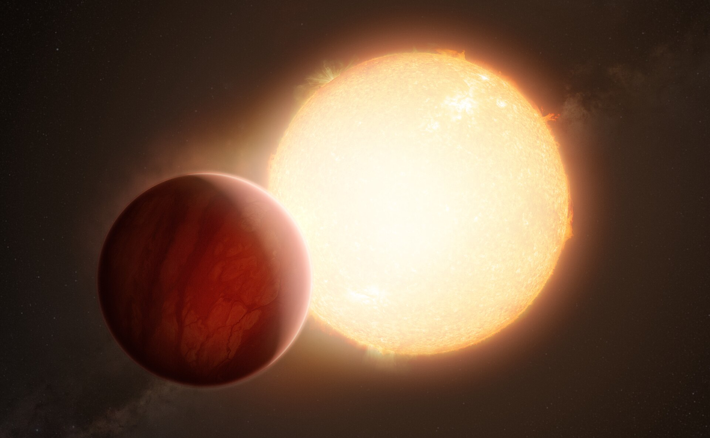

Overview
Hot Jupiters are gas giant exoplanets, comparable in size and mass to Jupiter, found orbiting extremely close to their host star, often closer than Mercury is to the Sun. The first exoplanet ever discovered around a Sun-like star, 51 Pegasi b in 1995, was a hot Jupiter, and the type remains one of the easiest kinds of planet to detect.
Formation
Hot Jupiters are thought to form far from their star, beyond the frost line where icy material is available to help build a large core, before migrating inward through interactions with their protoplanetary disk or gravitational tugs from other planets. Few scientists think a gas giant could form in place so close to its star, since the intense heat there would have prevented a large enough core from assembling quickly.
Physical characteristics
Being gas giants, hot Jupiters are composed mostly of hydrogen and helium, but their extreme heat causes many to be significantly puffed up compared to Jupiter, with some reaching well over Jupiter's diameter despite similar or lower mass. Many are also tidally locked to their star, permanently showing one side to it, much like the Moon does to Earth.
Atmosphere & Weather
Dayside temperatures on a hot Jupiter can exceed 1,000°C, hot enough to vaporise metals like iron and evaporate part of the planet's outer atmosphere into space. Extremely powerful winds are thought to carry heat from the permanently lit dayside to the dark nightside, and some hot Jupiters, such as WASP-76b, have been found to rain molten iron on their nightside as vaporised metal cools and condenses.
Notable examples
WASP-12b is one of the most extreme known hot Jupiters, stretched into an egg shape by its star's gravity and slowly spiralling inward, likely to be consumed within a few million years. HD 209458 b, nicknamed Osiris, was the first exoplanet observed transiting its star and the first found to have an evaporating atmosphere, detected as a tail of escaping hydrogen gas.
Detection
Hot Jupiters are usually found through the transit method, since their large size and close orbit produce a strong, frequent dip in starlight, or through the radial velocity method, since their mass and proximity cause a comparatively large wobble in their star. This made them the first type of exoplanet discovered in large numbers, even though they turned out to be far less common overall than smaller, more distant planets.